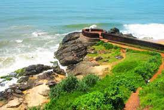
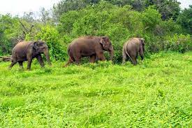
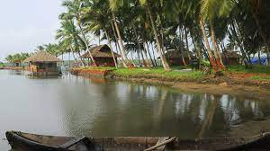

Lying at the northern tip of Kerala bounded by the Western ghats in the east and Arabian sea in the west; twelve rivers flowing across its terrain, Kasaragod is an enchanting beauty of Nature’s creations. There are different views on the derivation of the name “KASARAGOD”. One view is that it is the combination of two Sanskrit words kaasaara (which means lake or pond) and kroda (which means a place where treasure is kept). Another view is that it is the place where Kaasaraka trees (Strychnos nux vomica or Kaanjiram or Kaaraskara) are in abundance. Both views are relavant as there are large number of rivers, lakes and ponds in the coastal belt of the district besides thick flora consisting of innumerable varieties of trees, shribs etc. particularly plentitude of Kaasaraka trees. The landscape is dominated by the characteristic coconut palms accompanying rolling hills and streams flowing into the sea. The landscape is dotted with tiled-roof buildings, topped with the famous Kasaragod tiles made with the local hard red clay and typically walled with laterite blocks. Older houses are commonly found with elaborate woodwork. There are 12 rivers in this district.The longest is Chandragiri (105 kms) originating from Pattimala in Coorg and embraces the sea at Thalangara, near Kasargod. The river assumes its name Chandragiri from the name of the place of its source Chandragupta Vasti; where the great Maurya emperor Chandragupta is believed to have spent his last days as a sage.
| Parappa Wildlife Sanctuary | |
|---|---|
|  | Parappa Wildlife sanctuary is home to many incredible species of wildlife. It is one of the well known Wildlife sanctuaries in Kerala with a great natural diversity. It is located in Kanhangad range of Chervathur city. The Kanhangad range is the home of many wild species including jungle cats, turtles, peacock, horn bill and many others. The forest area also have many medical plants, the whole jungle is covered by green fragmented trees and many herbal plants. The sanctuary host numbers of endangered species, some of them are Malabar horn bill, Peacock, Jungle cat and slender loris.The state is taking steps to stop poaching and hunting in this forest, which is situated at a distance of about 22 km east of the town of Chervathur. |
| Cheruvathur | |
|---|---|
|  | Cheruvathur is a cosy small town in the Kasaragod district of Kerala, located only 10 kilometres south of the major town of Nileshwaram. The place is known for being the birthplace of great 19th-century poet Mahakavi Kuttamath of Kerala. His work on musical drama and poem compilations is an excellent source of literary inspiration in Cheruvathur. Keeping that in mind, authorities changed the name of the town to Kuttamath Nagar on paper. However, most people still call the town Cheruvathur only. The etymology of the name has its origin in the Malayalam words "cheriya pathu ooru" which means ten small places. Cheruvathur mainly attracts tourists because of its lovely views and greeneries. But more than that, it is a peaceful suburban retreat for a short weekend trip. There are not many places which you can visit. So, you can spend the time with your loved ones as much as you want to. Cheruvathur and its surroundings is a favourite picnic spot for the same reason. People from nearby places flock in during the peak seasons for an outing and enjoy the day far from the city's cacophony. |